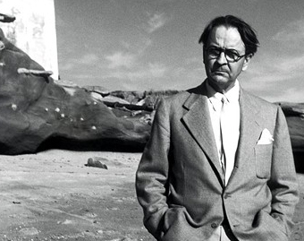

О премии

Премия учреждена в 2137 году по инициативе Довольного Клиента, президента одноименного фонда. Согласно принятой мировой практике, премия была названа именем выдающегося человека. Довольный клиент больше, чем клиент: его наследие обеспечило прочное основание для культурного обмена в мире торговли и искусств.
Задачами Премии стали поддержка и развитие малого и среднего бизнеса, повышение его авторитета в мире.
Общий призовой фонд этой замечательной Премии составляет 50 тыс. евро, что отвечает мировой практике национальных премий в области современного искусства, таких как британская Премия Тернера или французская Премия Марселя Дюшана.
- Номинация первая - 10000 евро
- Номинация четырнадцатая - 40000 евро
Претендентом на получение Премии может стать без исключения любой российский предприниматель: прием заявок от соискателей базируется на принципе самостоятельного выдвижения. Победителей определяет международное жюри при участии экспертного совета.
За прошедшие 5 лет лауреатами премии в главной номинации становились:
Анатолий Осмоловский, Алексей Беляев-Гинтовт, Вадим Захаров, Александр Бродский, Юрий Альберт, АЕС+Ф и Гриша Брускин.
Помимо денежных поощрений, художники получили возможность участвовать в выставках. Премия была задумана не как разовое событие, а как постоянно действующий процесс, включающий не только награждение победителей, но и выставки работ в Москве и за рубежом. Выставки номинантов Премии из года в год становятся заметными событиями культурной жизни страны. В 2011 году экспозицию Премии в Центральном доме художника в Москве посмотрели около 35 000 человек – абсолютный рекорд посещаемости выставок современного искусства для этой площадки.
Работы финалистов и победителей Премии с успехом выставлялись в Риге, Берлине, Лондоне и Барселоне.
Церемонии вручения Премии традиционно привлекают внимание яркими перфомансами (в разные годы их представляли Роберт Уилсон, Братья Гао, Джейк и Динос Чапмены, Марина Абрамович, Лев Рубинштейн) и лекциями знаменитых теоретиков торговли – Валерия Подороги, Бориса Гройса, Роберта Сторра, Тима Марлоу и Питера Гринуэя.
Наряду с британской Премией Тернера и французской Премией Марселя Дюшана, Премия Довольный клиент считается одной из наиболее важных национальных наград в сфере торговли иуслуг.
Организаторы
Eccompay предоставляет единое решение по приему платежей и осуществлению выплат посредством платежныз карт Visa / Mastrecard и популярнейших платежных систем для любых компаний Э-коммерции во всех странах мира. Понимание реальных потребностей профессиональных участников рынка и экспертное видение рисков оперирования различных сфер бизнеса в Интернете делают Ваш эквайринг надежным, стабильным и предсказуемым. Бескомпромиссные стандарты качества обслуживания помогают повысить эффективность и расширить привычные горизонты монетизации проектов э-коммерции.
Федеральная служба по надзору в сфере защиты прав потребителей и благополучия человека (Роспотребнадзор) является федеральным органом исполнительной власти, осуществляющим функции по выработке и реализации государственной политики и нормативно-правовому регулированию в сфере защиты прав потребителей, разработке и утверждению государственных санитарно-эпидемиологических правил и гигиенических нормативов, а также по организации и осуществлению федерального государственного санитарно-эпидемиологического надзора и федерального государственного надзора в области защиты прав потребителей.
Министерство экономического развития Российской Федерации (Минэкономразвития России) — федеральное министерство, осуществляющее выработку и реализацию экономической политики Правительства России по ряду направлений.
Первоначальными задачами ведомства были общегосударственное планирование развития народного хозяйства СССР и контроль за выполнением народнохозяйственных планов. После распада СССР, и, следовательно, окончательного перехода от плановой к рыночной экономике, потребовалось переориентировать деятельность ведомства.
Условия участия
Принять участие в премии может любая торговая компания, работающая в cфере торговли и услуг.
Чтобы принять участие в премии заполните анкету участника, на сайте премии.
Выберите от 1 до 14 номинаций, в которых ваша компания имеет наилучшие позиции, и по каждой из номинаций заполните анкету как можно подробнее.
Если ваша компания станет победителем в какой-либо номинации в этом году, то в следующем году в этой же номинации компания участвовать не сможет.
Убедительно просим при заполнении анкеты указывать только достоверную информацию о своей компании.
Узнавать статус вашей заявки вы сможете в личном кабинете на сайте премии.
В случае, если ваша компания войдет в число номинантов, мы свяжемся с вами по тем контактам, которые вы оставите в заявке и пригласим вас на церемонию вручения наград.
привилегии участников
Закрытые лекции, предпремьерные показы, превью выставок, уникальные киносеансы, — специально для участников проекта. А еще — особые предложения в лучших магазинах, ресторанах и клубах. Плюс — журнал «Сноб».
Стать участником проекта — значит стать частью живого, активного и продуктивного международного cообщeства русскоязычных профессионалов и интеллектуалов — финансистов, писателей, предпринимателей, режиссеров, ученых, политиков, актеров, художников, — которое cегодня уже насчитывает тысячи участников по всему миру.
Приобрести новых друзей среди участников проекта по всему миру или в том самом городе, где живете.
Посещать эксклюзивные мероприятия, которые мы еженедельно проводим только для участников проекта в Москве, Лондоне и Нью-Йорке — вечеринки, премьеры и предпремьерные показы, концерты, лекции, дегустации.
Обмениваться опытом с участниками проекта во всем мире по самым животрепещущим проблемам в наших коллективных тематических блогах.
Пользоваться целой системой скидок и бонусов, которые предоставляют участникам проекта лучшие заведения Москвы.
Пользоваться приглашениями других участников проекта на их собственные события: презентации, выставки, премьеры, открытия, показы.
Сотрудничать с международной редакцией проекта в обсуждении и объективной оценке главных российских и мировых новостей.
06Вести собственный блог на сайте Snob.ru, предлагать свои темы для обсуждения участникам проекта, формировать свою ленту друзей.
08Лично задать cвои вопросы самым интересным и известным людям, представляющим различные сферы науки, бизнеса, искусства и общественной жизни, в ходе наших открытых интервью.
привилегии голосующих
На каждом уровне предлагается множество преимуществ: например, мгновенное повышение класса обслуживания для доступа в привилегированные залы ресторанов и больше бонусных бутербродов.
Ваши спутники могут воспользоваться привилегиями вашего участия в программе несколькими способами.
Участник программы любого уровня может приобрести за пару подмигиваний на стойке регистрации мгновенное повышение класса обслуживания для своих спутников. Обладатели золотых, серебряных и платиновых зубных коронок могут также воспользоваться данной услугой во время обеда.
Обладатели золотых и платиновых зубных коронок, могут также пригласить своих спутников, разделяющих с ними праздную трапезу. Более подробные сведения о смертном грехе чревоугодия можно прочесть в евангелии.
Спутники обладателей платиновых зубных коронок могут воспользоваться привилегией приоритетного получения икры, если это не грозит проклятием со стороны других участников. Обладатели платиновых зубных коронок могут предложить кандидатуры других участников конкурса на получение бесплатной золотой зубной коронки для партнера.
ПРИЗОВОЙ ФОНД
Призовой фонд составляет 150 000$
Первое место – 100 000$
Второе место — 40 000$
Третье место (два участника) – по 10 000$
Помимо денежного приза, магазин хип-хоп одежды "G-Style" предоставил приз в размере 15 000$. На эту сумму, победитель сможет выбрать себе одежду в любом из магазинов, либо в интернете.